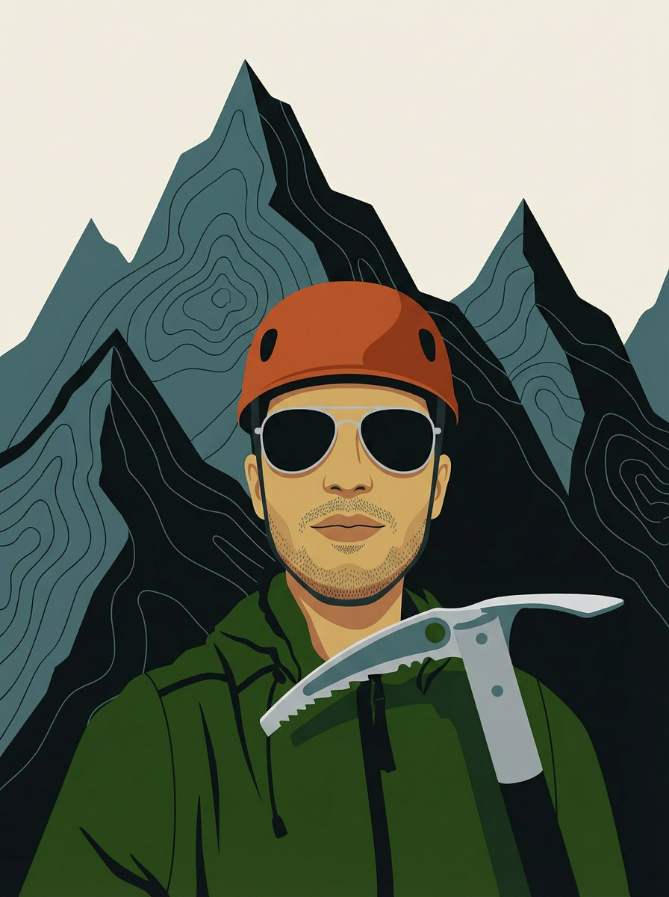

About
Chennai to Sydney
to Seattle.
I'm Ashwin Ramesh — a senior software engineer at AWS in Seattle, originally from Chennai, India. I studied at IIT Madras, spent six years building systems in Sydney, and relocated to the Pacific Northwest in 2022. The geography changed. The instincts didn't. What you're willing to work for reveals what matters — in systems and elsewhere.

Seattle.
Senior software engineer at AWS. Distributed systems and software-defined networking — traffic engineering, packet processing, backend services across 30+ regions and 400+ edge locations.
The Cascades are twenty minutes from the city. Difficulty is information. What surfaces under pressure — in terrain or in systems — is worth paying attention to.
Six years in Sydney.
DGraph Labs — a distributed graph database startup — then Goldman Sachs, then AWS. Each step brought larger systems and sharper design decisions.
Sydney was good. The harbour, the Blue Mountains, the coastal walks. Moving to Seattle in 2022 was a deliberate choice.
IIT Madras and the foundational years.
I grew up in Chennai. Studied computer science at IIT Madras, 2012–2016. Good peers, good fundamentals, a lasting preference for first principles.
How I think about engineering.
Where most of my time has gone:
Distributed Systems
Consensus algorithms, replication strategies, partition tolerance, and the real cost of eventual consistency when clients are not cooperative.
Database Design
Schema design for longevity, storage engine internals (B-trees, WAL, compaction), and what your access patterns reveal about your data model.
Software-Defined Networking
Traffic engineering, packet processing, and network programmability at the scale of 30+ global AWS regions and 400+ edge locations — where the network is infrastructure you design, not a fixed substrate you rely on.
Systems Reliability
Fault isolation, graceful degradation, observability-first design, and the operational discipline that keeps large systems predictable under pressure.
Backend Infrastructure
Service architecture, API design, data pipelines, and the design decisions that determine whether systems remain maintainable three years after they ship.
Dgraph, Goldman Sachs, AWS — different contexts, consistent instincts. Build where you can stay. Care for small things early.
Outside work.
Backpacking the North Cascades and the Olympics. Skiing broadly — this year from the Canadian Rockies (Banff, Lake Louise, Jasper, Revelstoke) to the Sierra Nevada (Mammoth, Palisades) to Mt Bachelor in Oregon. AIARE Level 1 completed; backcountry is the next objective.
Tracking VO₂ max with more rigour than necessary. The best paths are chosen freely. Attention is preventative — for gear, for systems, for most things worth keeping.
Career timeline
Career timeline
-
Mar 2022 – present
Senior Software Engineer
Amazon Web Services · Seattle, USA
Distributed systems and software-defined networking at AWS headquarters. Traffic engineering, backend services, technical leadership.
Current -
Jul 2019 – Mar 2022
SDE II
Amazon Web Services · Sydney, Australia
Distributed backend systems at cloud scale. Database design, systems management, high availability.
-
Nov 2017 – Jun 2019
Software Engineer
Goldman Sachs · Sydney, Australia
Backend engineering in financial systems. Correctness, latency, and operational discipline at a different standard.
-
Jan 2016 – Oct 2017
Backend Engineer
DGraph Labs · Sydney, Australia
Contributed to Dgraph, an open-source distributed graph database written in Go.
-
2012 – 2016
BTech, Computer Science
Indian Institute of Technology Madras · Chennai, India
Foundational years. Algorithms, systems, and a permanent regard for first principles.
Get in touch.
Distributed systems, Cascades routes, or anything worth a conversation.